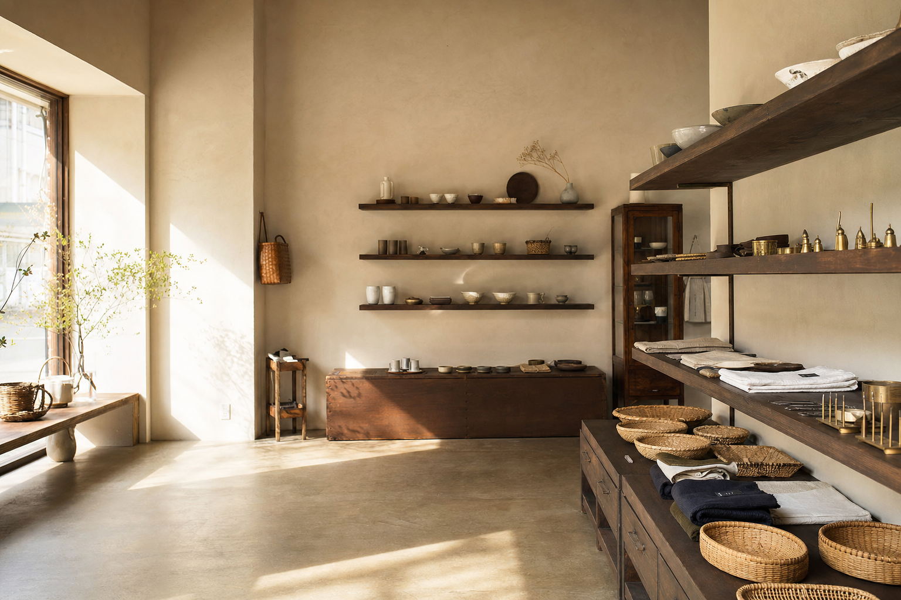
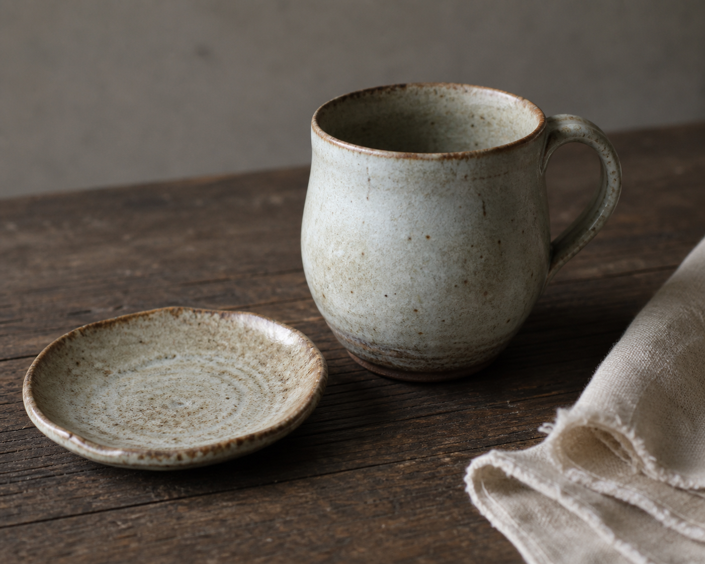
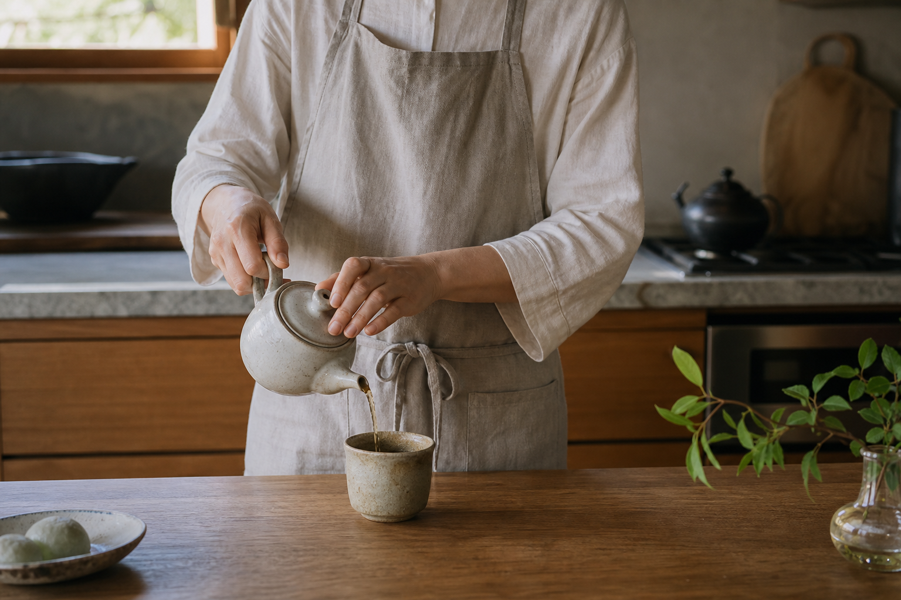
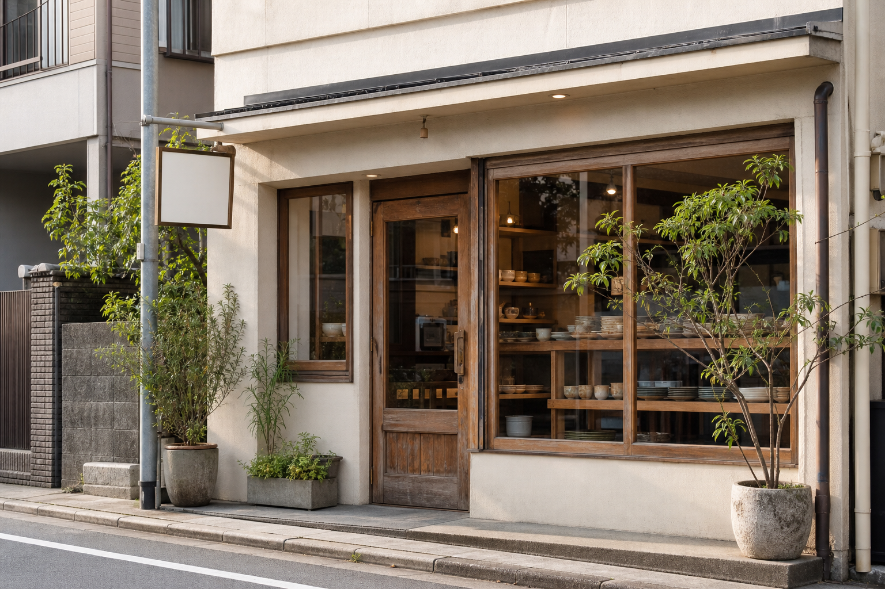

朝のマグ
瀬戸・磁器
¥ 3,850
About / 01
日々の道具店は、毎日のなかで自然に手が伸びるものを選ぶ店です。つくり手の技術や素材の背景も、品ものと一緒にお渡しします。

Picked for the table
釉薬のゆらぎ、指に馴染む縁、少しずつ育つ色。使うほどに、自分の器になっていくものを選んでいます。
Online shelf / 02
在庫表示はデモです。
瀬戸・磁器
¥ 3,850
遠州・麻
¥ 2,640
新潟・手仕事
¥ 1,980Visit / 03
日々の道具店｜デモチャット
このチャットはサンプルです。内容は保存・送信されません。